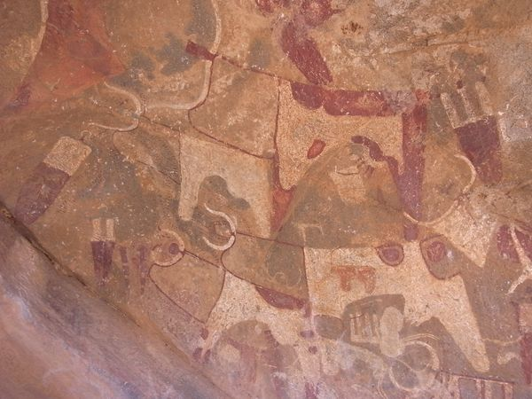

～國家～
二十年來 Somaliand 一直自稱為一個國家，但到今天都未得到國際承認。這裏沒有什麼好做，沒有什麼好遊覽，沒有令人垂涎的天然資源，就這樣子就得不到別人的著緊，反而仍然有著 被 Somalia 威脅的陰霾，和當地人傾談時，我好奇問這裏其實要做什麼才能被承認的呢？回覆是，不知道。只知道，努力地維持安全，別人才會放心來這裏發展。所以，這裏十 分重視外國人的安全，在這裏旅遊，我感覺比在 Ethiopia 還放心。
這個旅遊資料極少的國家，首都 Hargeisa 其實只有一條主要街道有點東西看，至於周圍數平方公里的縱橫街道，有什麼好看的有待有心人發挖。位於 Hargeisa 和海邊城市 Berbera 之間的 Las Geel 可算是唯一亮點。(其實 Oriental Hotel 的 tour list 中還有別的地方，但不記得是什麼了，後悔沒有把它記下來)
去 Las Geel 要 permit，要有 scout 同行，車程不用二小時，這裏只得我和 T 兩位遊客，導遊帶我們去看山頭上的洞穴，洞內畫了些圖畫，這個是人、牛、狗、老虎，看完一個又一個，都是差不多。我到 Somailand 主因是 Las Geel，感覺奇怪，不失望但也沒有很興奮，自由時間獨個兒戴上耳筒聽著音樂看著周圍風境，因為時間尚早蕩久了，結果導遊和個 scout 找我回去，阿 scout 還以為我偷石頭。
由市中心去機場的士要十美元，比起這裏的消費算是貴，shared taxi 去 200 公里遠的 Berbera 才五美元。Hargeisa 機場很簡陋，離境卻要收 32 美元。候機室像裝修未完工的大堂，但這裏的咖啡很好喝，說起來不論 Ethiopia 或 Somaliland 都會用那種很大部的咖啡機來沖，工作人員每次都即時用機磨豆然後壓咖啡出來。
在這裏認識了一位機場工作人員 Ahmed，穿著制服的他負責機場電腦網絡，候機室有兩部電腦供上網但網絡因工程問題中斷。Ahmed 在 Dubai 出生，生活了二十年，但是因為 Dubai 法例規定非 Dubai 人成年後若果沒有工作的話不可留下，Ahmed 唯有回到父母的家 Somaliland。他說他的心願是可以把這裏的網絡和國際航空的網絡聯系，但這裏政府的人很難溝通，甚至不明白為什麼要這樣做。
原來這機場是自負盈虧，政府沒有任何資助，所以離境收稅等的收入都是用在機場，政府都沒有錢，這國家沒有人投資，人們都怕不安全， Ahmed 希望有天會有人找到資源，到時才會有人重視。
回想前天由 Wajaale 坐車到 Hargeisa 經過無邊際的土地，同車的男人說這裏的人不懂得如何幹，土地放著沒用，人就是不知道如何做，只期望有外國人來發展，教他們如何做。Ahmed 慨歎做不了什麼。
一個國家沒有錢，人民不會主動做事，街上垃圾沒有人處理，種下的樹木沒有人澆水，沒有城市規劃，除非像某些國家強逼人民做苦工，但這樣 又不人道。不知道從何時開始，自立為國要得到人認同，現今的國家又是誰承認的？
往來 Hargeisa 和 Djibouti 的航空公司有 Daallo 和 Jubba，Daallo 出名經常 delay，不過今次我們的 Jubba 反而有問題，一再延遲，我們站在外面看著我們要乘的飛機，左邊的螺旋槳起動不了，看見工作人員換零件，之後試了一會就上機。
飛機安全到達 Djibouti，在 Djibouti 的使費比鄰國貴很多，入住最 cheap 的 Hotel Horseed 都要約 USD 35 一晚還要是公共浴廁和超簡陋房間。這國家不知何解十分的熱，可能和地勢處於 depression 有關，我們行去食市集中地，隨便選了一間地度小食店，出奇地價錢不算高。T 再發揮他健談的本色，和小店老闆傾談，小店老闆本來已定居加拿大，但是由於生活太過沉悶，還是回祖國創一番事業，說雖然幸苦但是起碼感到開心，看見老闆很 開心地和 T 傾談，覺得 T 這方面的確值得我學習。
T 說 Djibouti 的酒吧和夜生活很出名，我們在很多酒吧的街上逛，一位身形細小的男子前來向 T 兜搭，問要不要小姐按摩，我心想一定是黃色事業，而 T 也應該去慣似的，說要跟著去看看便走，我們跟著那男子行過一條又一條的街，去到很僻靜的地方，進入一幢數層高的樓，行上兩層，裏面一間又一間的房，有的裏 面坐著一些男人，像夜總會，有的房裏有很多女人，看見 T 那副樣子，我說：「T，我先走。」T 卻也就走了，一位女人說：「你們不要酒不要女人上來幹什麼。」
這城十分細，認著路很容易便行回去旅館。